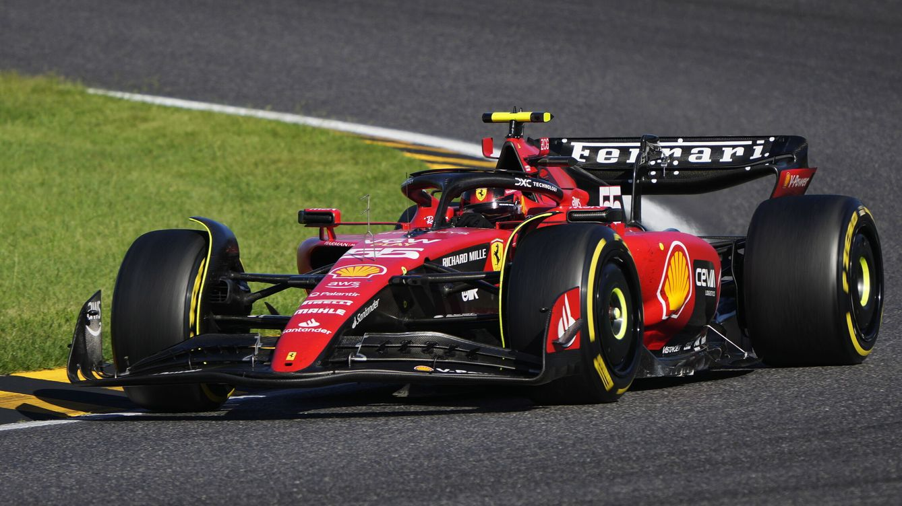
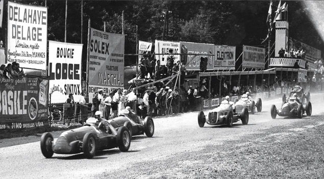
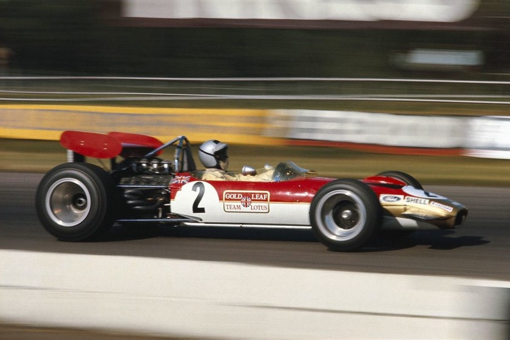
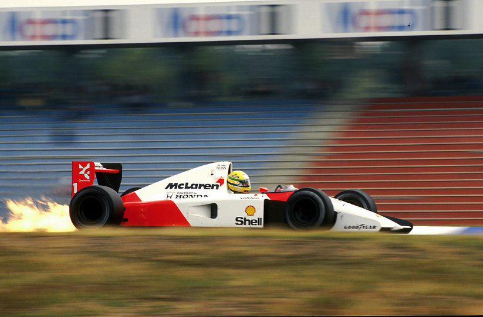
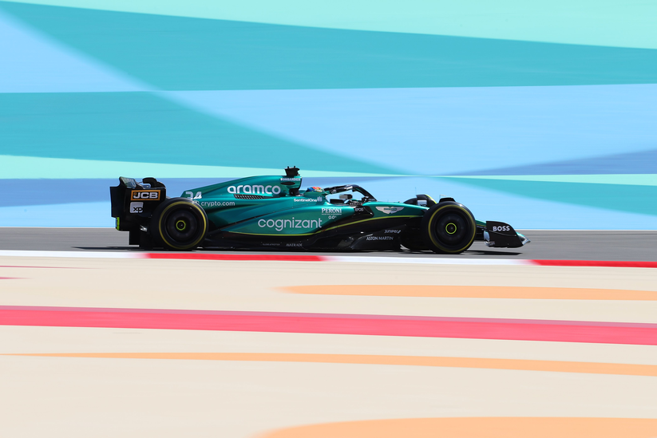

HISTORIA
¿Que es la Formula 1?
El Campeonato Mundial de Fórmula 1 de la FIA, más conocido como Fórmula 1, F1 o Fórmula Uno, es la principal competición de automovilismo internacional y el campeonato de deportes de motor más popular y prestigioso del mundo. La entidad que la dirige es la Federación Internacional del Automóvil (FIA). Desde septiembre del 2016, tras la adquisición de Formula One Group, la empresa estadounidense Liberty Media es la responsable de gestionar y operar el campeonato.
A cada carrera se le denomina Gran Premio y el torneo que las agrupa es el Campeonato Mundial de Fórmula 1. La mayoría de los circuitos de carreras donde se celebran los Grandes Premios son autódromos, aunque también se utilizan circuitos callejeros y anteriormente se utilizaron circuitos ruteros. A su vez, los automóviles utilizados son monoplazas con la última tecnología disponible, siempre limitadas por un reglamento técnico; algunas mejoras que fueron desarrolladas en la Fórmula 1 terminaron siendo utilizadas en automóviles comerciales, como el freno de disco.
El inicio de la Fórmula 1 moderna se remonta al año 1950, en el que participaron escuderías como Ferrari, Alfa Romeo y Maserati. Algunas fueron reemplazadas por otras nuevas como McLaren, Williams, Red Bull y otras que volvieron como Mercedes se han alzado varias veces con el Campeonato Mundial de Constructores. Por su parte, los pilotos deben contar con la superlicencia de la FIA para competir, que se obtiene por los resultados en otros campeonatos.
Creacion del campeonato
En 1945, inmediatamente después de la Segunda Guerra Mundial, sólo hubo cuatro carreras. Antes de la Segunda Guerra Mundial se habían establecido las reglas para las competiciones de Grand Prix, que debían obedecer tanto autos como pilotos. Estas reglas, conocidas en su conjunto como Fórmula, no se concretaron hasta que en 1947 la antigua AIACR se reorganizó, pasándose a llamar la Federación Internacional del Automóvil, conocida por las siglas "FIA". Con sede central en París, al final de la temporada de 1949 anunció que para 1950 unirían varios Grandes Premios nacionales para crear un Campeonato Mundial de Pilotos, por lo que en 1950 se celebró el primer campeonato de Fórmula 1. Por motivos económicos, en los años de 1952 y 1953 todavía se compitió con coches de Fórmula 2 y el calendario continuó incluyendo varias carreras que no eran consideradas Grandes Premios hasta 1983. Se estableció un sistema de puntuación y se reconocieron un total de siete carreras como aptas para el Campeonato del Mundo
Los garajistas
El primer gran desarrollo tecnológico se produjo cuando la Cooper Car Company reintrodujo coches con motor central (después de los pioneros Auto Union de Ferdinand Porsche en los años 1930), que evolucionaron desde los diseños de la empresa en la Fórmula 3. El australiano Jack Brabham, campeón del mundo en 1959, 1960 y 1966, pronto demostró la superioridad del nuevo diseño. En 1961, todos los competidores regulares habían cambiado a coches con motor central. El Ferguson P99, con tracción a las cuatro ruedas, fue el último coche de Fórmula 1 con motor frontal en participar en el Campeonato Mundial. Fue el único de su clase en participar de la 1961, tomando la partida únicamente en el Gran Premio de Gran Bretaña.
En 1962, Lotus presentó un coche con un chasis monocasco de aluminio en lugar del tradicional chasis tubular. Este resultó ser el mayor avance tecnológico desde la introducción de los coches con motor central. En 1968, Lotus incluyó el logotipo de Imperial Tobacco en sus automóviles, introduciendo el patrocinio de marcas de tabaco en este deporte.
La aerodinámica adquirió lentamente importancia en el diseño de los coches a partir de la aparición perfiles aerodinámicos a finales de los años 60. A finales de la década siguiente, Lotus presentó una carrocería con efecto suelo, que generaba una enorme fuerza de sustentación negativa y permitía circular a mayores velocidades en las curvas —aunque el concepto ya había sido utilizado en el Chaparral 2J de Jim Hall, en 1970—. Tan grandes eran las fuerzas aerodinámicas que presionaban los coches a la pista, hasta 5 g, que fue necesario aumentar la rigidez de los muelles de la suspensión, para que influyeran menos en la altura del chasis respecto al suelo, dejando a la suspensión casi rígida. Este aumento de rigidez de la suspensión hacía depender casi en exclusiva de los neumáticos para amortiguar al chasis y al piloto respecto a las irregularidades de la superficie del circuito.
La gran empresa
A partir de la década de 1970, Bernie Ecclestone reorganizó la gestión de los derechos comerciales de la Fórmula 1. Ecclestone es ampliamente reconocido por la transformación del deporte en un negocio de miles de millones de dólares. Cuando Ecclestone compró el equipo Brabham en 1971 se ganó un puesto en la Asociación de Constructores de Fórmula 1 (FOCA) y en 1978 se convirtió en su presidente. Antes los propietarios de los circuitos controlaban los ingresos de los equipos y negociaban con cada uno individualmente; sin embargo, Ecclestone convenció a los equipos de hacerlo en conjunto a través de FOCA. Le ofreció la Fórmula 1 a los propietarios del circuito como un paquete que podían tomar o dejar, a cambio de la publicidad a bordo.
La formación de la Fédération Internationale du Sport Automobile (FISA) durante 1979 desató la polémica FISA-FOCA, durante la cual la FISA y su presidente Jean-Marie Balestre discutieron repetidamente con FOCA sobre los ingresos de televisión y las reglamentaciones técnicas. FOCA amenazó con establecer una serie rival, boicoteó un Gran Premio y FISA retiró la sanción de las carreras. El resultado fue el Acuerdo de la Concordia de 1981, que garantizaba la estabilidad técnica, ya que los equipos iban a recibir un aviso razonable de las nuevas normativas. Aunque FISA afirmó su derecho a los ingresos de televisión, entregó la administración de los derechos a la FOCA. En 1987, la FOCA cedió la gestión de los derechos de televisión a la Formula One Promotions and Administration (FOPA), luego renombrada Formula One Management, bajo la dirección de Ecclestone.

El desarrollo de ayudas electrónicas a los pilotos comenzó durante la década de 1980. Lotus desarrolló un sistema de suspensión activa que apareció por primera vez durante el año 1982 en el Lotus 91. En 1987, este sistema fue perfeccionado y conducido a la victoria por Ayrton Senna en el Gran Premio de Mónaco de ese año. A principios de 1990 otros equipos siguieron su ejemplo y desarrollaron cajas de cambio semi-automáticas y control de tracción eran una progresión natural. La FIA, debido a las quejas de que la tecnología determinaba el resultado de las carreras más de la habilidad del piloto, prohibió muchas de estas ayudas para el año 1994. Esto dio lugar a que los coches que anteriormente dependían de las ayudas electrónicas fuesen difíciles de conducir (en particular el Williams FW16). Muchos observadores consideraron que la prohibición de las ayudas al conductor no se concretaron ya que "demostraron ser difíciles de controlar con eficacia".
Los pilotos de los equipos McLaren, Williams y Benetton Renault, y Ferrari, ganaron cada campeonato del mundo de 1984 a 2008 y los propios equipos ganaron cada campeonato de constructores entre 1979 y 2008. Debido a los avances tecnológicos de la década de 1990, el costo de competir en la Fórmula 1 ha aumentado dramáticamente. Este aumento de las cargas financieras, combinado con el predominio de los cuatro equipos (en gran parte financiados por grandes fabricantes de automóviles como Mercedes-Benz), hizo que los equipos más pobres e independientes lucharan no solo para mantener la competitividad, sino para mantenerse en el negocio, y obligó a varios equipos a retirarse. Desde 1990, veintiocho equipos se han retirado de la Fórmula 1.
Evolucion del logo de la F1
La identidad visual de la F1 ha sido bastante estable a lo largo de la historia. Se cambió drásticamente dos veces y tuvo el logotipo más icónico en 1994. El emblema permaneció en la Fórmula 1 durante más de 29 años y fue rediseñado en 2018.
1985-1986
1987-1993
1994-2017
2018-actualidad
Evolucion de los monoplazas
Los monoplazas de la formula 1 han tenido cambios sustanciales a lo largo del tiempo ha medida que ha avanzado la tecnología
En esta comparacion se muestra dos monoplazas distintos, uno del año 1991 y otro del año 2023
 Aleron Delantero
El alerón delantero de un coche de Fórmula 1 es una parte esencial de su diseño aerodinámico, diseñado para generar carga aerodinámica hacia abajo (downforce) y mejorar el agarre y la estabilidad del vehículo a altas velocidades. Compuesto por elementos como el plano principal, los elementos endplate, los flaps y la nariz, el alerón delantero trabaja en conjunto para dirigir el flujo de aire de manera eficiente alrededor y debajo del coche. Esto aumenta la adherencia de los neumáticos delanteros al asfalto, permitiendo que el monoplaza tome curvas a mayor velocidad y con mayor confianza. Su diseño y configuración están sujetos a regulaciones estrictas de la FIA para garantizar la equidad y la seguridad en la competición, y su optimización es el resultado de un intenso trabajo de ingeniería aerodinámica por parte de los equipos de Fórmula 1.
Ruedas del Vehiculo
Las ruedas de un coche de Fórmula 1 son componentes esenciales diseñados para ofrecer un rendimiento máximo en condiciones extremas. Estas ruedas, fabricadas por proveedores especializados bajo estrictas regulaciones de la FIA, consisten en llantas de aleación de aluminio y neumáticos radiales de alta tecnología. Las llantas son ligeras pero resistentes para soportar las fuerzas generadas durante la carrera, mientras que los neumáticos están formulados para proporcionar agarre, durabilidad y rendimiento óptimos en diversas condiciones de pista. Además, las ruedas son fácilmente desmontables y reemplazables durante las paradas en boxes, lo que permite cambios estratégicos según las condiciones de la pista y la estrategia de carrera.
Pontones Laterales
La fabricación de los pontones requiere materiales compuestos de vanguardia, capaces de soportar las exigencias aerodinámicas y estructurales de la competición. Su diseño aerodinámico es crucial, canalizando el flujo de aire hacia la parte trasera del coche para generar downforce y mejorar la estabilidad en curvas. Además de su función aerodinámica, los pontones son esenciales para la refrigeración del motor y otros sistemas críticos. El flujo de aire a través de ellos ayuda a disipar el calor, garantizando un rendimiento óptimo y previniendo el sobrecalentamiento durante la carrera. En resumen, los pontones de un coche de Fórmula 1 son componentes multifuncionales que combinan eficiencia aerodinámica con funciones esenciales de refrigeración, contribuyendo de manera significativa al rendimiento general del vehículo en la pista.
Fondo Plano
El fondo plano de un coche de Fórmula 1, esencialmente, es una parte vital del diseño aerodinámico del vehículo, situado en la parte inferior del chasis. Su principal función es generar downforce al manipular el flujo de aire debajo del coche, mejorando la adherencia y la estabilidad en las curvas. Fabricado con materiales compuestos avanzados como la fibra de carbono, busca maximizar la resistencia y la ligereza para soportar las altas fuerzas aerodinámicas sin aumentar el peso del coche. Además, el diseño del fondo plano está optimizado para reducir la resistencia al avance, lo que contribuye a una mayor velocidad en las rectas. En resumen, el fondo plano juega un papel crucial en el rendimiento global del coche de Fórmula 1, mejorando su manejo, estabilidad y velocidad en la pista.
Piloto
El piloto de un coche de Fórmula 1 es el elemento humano clave en el equipo, responsable de llevar el vehículo a su máximo rendimiento en la pista. Además de pilotar el coche a velocidades extremadamente altas, el piloto debe tener un profundo conocimiento técnico del vehículo y las condiciones de la pista, así como habilidades excepcionales de reacción y concentración. Los pilotos de Fórmula 1 son atletas de élite que se someten a rigurosos entrenamientos físicos y mentales para mantenerse en forma y enfocados durante las largas y exigentes carreras. Su capacidad para interpretar los datos telemétricos en tiempo real, comunicarse eficazmente con el equipo de ingenieros y tomar decisiones rápidas bajo presión son aspectos cruciales de su trabajo. Normalmente suelen pilotar seres humanos excepto por una excepcion llamada Fernando Alonso que no ha venido de este planeta.

Halo
El "Halo" es un dispositivo de seguridad introducido en la Fórmula 1 para proteger la cabeza del piloto en caso de accidente. Consiste en un arco de titanio montado en la parte delantera del cockpit y anclado al chasis del coche. Su diseño busca evitar que objetos grandes, como neumáticos u otros vehículos, entren en contacto directo con la cabeza del piloto en caso de colisión. El Halo ha demostrado ser efectivo en varios accidentes alrededor del mundo, protegiendo a los pilotos de lesiones graves. Aunque inicialmente generó controversia por su apariencia y posible impacto en la visibilidad, ha sido ampliamente aceptado como una medida de seguridad crucial en el deporte del automovilismo. En resumen, el Halo es un dispositivo de seguridad fundamental en la Fórmula 1, diseñado para proteger la cabeza del piloto y garantizar su seguridad en caso de accidente.
Motor
El motor de un coche de Fórmula 1 es una maravilla de la ingeniería, siendo un motor de combustión interna altamente avanzado, generalmente un V6 turboalimentado de 1.6 litros. Estos motores son compactos pero potentes, superando los 1000 caballos de fuerza. Además de su potencia, son eficientes gracias a sistemas de recuperación de energía cinética y térmica. Requieren un mantenimiento constante y son sometidos a rigurosas pruebas para garantizar su rendimiento óptimo y confiabilidad. En resumen, el motor de un coche de Fórmula 1 combina potencia, eficiencia y confiabilidad en un diseño avanzado y tecnológico.
Aleron Trasero
El alerón trasero de un coche de Fórmula 1 es una parte fundamental del diseño aerodinámico, diseñado para generar carga aerodinámica negativa (downforce) y mejorar la estabilidad del vehículo a altas velocidades. Compuesto por un ala principal, elementos endplate y flaps ajustables, el alerón trasero trabaja en conjunto para dirigir el flujo de aire de manera eficiente y crear un vacío detrás del coche, aumentando la adherencia de los neumáticos traseros al asfalto. Esto permite al piloto tomar curvas a mayor velocidad y con mayor confianza, mejorando el rendimiento general del vehículo en la pista. El diseño y la configuración del alerón trasero están sujetos a estrictas regulaciones de la FIA para garantizar la equidad y la seguridad en la competición. Además, los equipos de Fórmula 1 dedican una cantidad significativa de recursos al desarrollo y la optimización del alerón trasero para maximizar su eficiencia y rendimiento en cada carrera.
Difusor
El difusor de un coche de Fórmula 1 es una parte esencial de su diseño aerodinámico, ubicado en la parte trasera del chasis, justo debajo del alerón trasero. Su función principal es acelerar el flujo de aire que pasa por debajo del coche y expandirlo, lo que crea un área de baja presión y aumenta la velocidad del aire. Esto genera un efecto de succión que ayuda a aumentar la carga aerodinámica en la parte trasera del coche, mejorando la estabilidad y la tracción en las curvas. El diseño del difusor está sujeto a regulaciones estrictas de la FIA para evitar cualquier ventaja aerodinámica excesiva, y su forma y configuración son objeto de intensa investigación y desarrollo por parte de los equipos de Fórmula 1 para optimizar su eficiencia y rendimiento en la pista. En resumen, el difusor es una parte crucial del diseño aerodinámico de un coche de Fórmula 1, contribuyendo significativamente a su manejo y rendimiento en la competición.